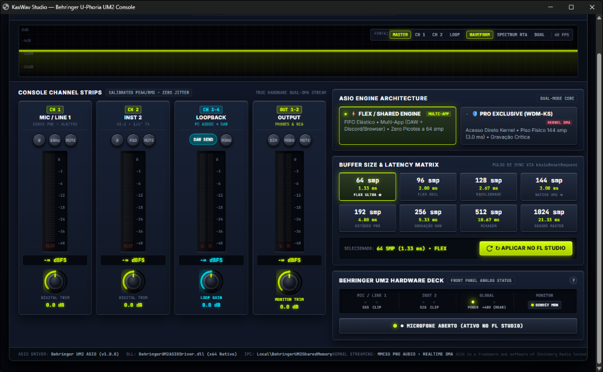

Manual de Operação — Behringer UM2 ASIO Pro Console
Guia completo de cada knob, botão, filtro DSP, analisador de espectro e arquitetura de baixa latência (1.33 ms) projetado sob medida para a interface Behringer U-Phoria UM2 (Codec Texas Instruments PCM2902).

VISÃO GERAL DO CONSOLE • MIXER DSP 32-BIT FLOAT, RTA 60 FPS, LOOPBACK ESTÉREO E MATRIZ DE LATÊNCIA
01 BARRA SUPERIOR DE TELEMETRIA E ANALISADOR VISUAL (60 FPS)
Indicadores de Telemetria Superior TEMPO REAL
- Status do Driver (STREAMING ATIVO / STANDBY): Indica em tempo real se a sua DAW (FL Studio, Reaper, Ableton, etc.) está com o motor de áudio engatado.
- Seletor 44.1 kHz / 48.0 kHz: Alterna a taxa de amostragem nativa do chip PCM2902. Recomendado: 48.0 kHz para menor latência em milissegundos.
- BUFFER / LATÊNCIA & ROUNDTRIP (RTL): Exibe a latência de saída (ex: 1.33 ms a 64 samples) e a latência total de ida e volta (2.66 ms).
- XRUNS / DROPOUTS (RESET): Conta cortes de áudio caso a CPU sobrecarregue. O botão RESET zera o contador para novos testes.
Osciloscópio & Spectrum RTA 60 FPS DSP
- Seletores de FONTE: Escolha qual sinal visualizar na tela:
• MASTER: Saída principal enviada aos fones/monitores.
• CH 1 / CH 2: Sinal individual do Microfone ou Instrumento.
• LOOP: Áudio capturado do Windows (YouTube/Spotify/PC).
- Modos de Visão:
• WAVEFORM: Desenha a onda real com linha guia em -12 dB (nível ideal para gravação vocal sem clipar).
• SPECTRUM RTA: Analisador de frequências de 36 bandas (graves à esquerda, médios ao centro, agudos à direita).
• DUAL: Combina o gráfico de espectro + onda simultaneamente.
💡 Dica Rápida de Uso dos Knobs (Botões Giratórios): Para ajustar qualquer knob (DIGITAL TRIM, LOOP GAIN ou MONITOR TRIM), clique e arraste o mouse para cima ou para baixo (precisão de 0.1 dB). Para voltar imediatamente ao ganho original (0.0 dB), basta dar um duplo clique sobre o knob!
02 CONSOLE CHANNEL STRIPS — FUNÇÃO DE CADA CANAL, BOTÃO E KNOB
CH 1 — MIC / LINE 1 XENYX XLR/TRS
- Botão Ø (Fase 180°): Inverte a polaridade da onda do microfone. Corrige som "oco" (cancelamento de fase) quando você monitora ou grava com 2 captações.
- Botão 80Hz (Filtro High-Pass): Ativa um filtro Butterworth de 80 Hz em C++ que limpa ruídos graves (vento, "puffs" de voz, ar-condicionado e batidas no pedestal) antes de entrar na DAW.
- Botão MUTE: Silencia a entrada 1 instantaneamente.
- Knob DIGITAL TRIM (-24 a +12 dB): Ajusta o volume digital do microfone enviado para a DAW sem precisar mexer no botão físico da placa.
CH 2 — INST 2 HI-Z 1/4" TS
- Botão Ø (Fase 180°): Inverte a polaridade do canal de instrumento (essencial ao gravar guitarra/baixo em linha junto com amplificador).
- Botão PAD (-10 dB): Reduz o volume de entrada em -10 dB. Ideal para guitarras/baixos com captadores ativos ou teclados com sinal muito forte que estejam saturando.
- Botão MUTE: Silencia o canal de instrumento 2.
- Knob DIGITAL TRIM (-24 a +12 dB): Ganho digital fino para calibrar o nível do instrumento na DAW.
CH 3-4 — LOOPBACK PC AUDIO ➔ DAW
- O que faz: Cria os canais virtuais Input 3 e Input 4 dentro da sua DAW para gravar o som do próprio PC (YouTube, Spotify, navegador, jogos) em qualidade digital pura.
- Botão DAW SEND: Quando aceso, envia o áudio do PC para os canais 3-4 da DAW. Desligue quando não quiser capturar o PC.
- Botão MONO: Junta os lados Esquerdo + Direito do áudio do PC em Mono.
- Knob LOOP GAIN (-24 a +12 dB): Controla o volume da gravação do PC dentro da DAW sem alterar o volume do seu Windows.
OUT 1-2 — OUTPUT MASTER PHONES & RCA
- Botão DIM (-14 dB): Baixa o volume geral em -14 dB com 1 clique (perfeito para atender o celular ou conversar no estúdio e depois voltar exatamente ao mesmo volume).
- Botão MONO: Soma a saída Master em Mono. Indispensável na mixagem para conferir se a música soa bem em caixas mono/celulares.
- Botão MUTE: Silencia toda a saída da DAW.
- Knob MONITOR TRIM (-24 a +6 dB): Controle de volume digital de saída da DAW.
03 ARQUITETURA DO MOTOR ASIO (FLEX SHARED vs. PRO EXCLUSIVE)
⚡ FLEX / SHARED ENGINE RECOMENDADO • MULTI-APP
- Multitarefa Total: Permite usar o FL Studio / DAW ao mesmo tempo que o Discord, YouTube, Spotify e navegador sem travar o som do PC.
- Latência Ultrabaixa (64 smp / 1.33 ms): Utiliza fila elástica Lock-Free em C++20 com agendamento de baixa latência do Windows.
🛡️ PRO EXCLUSIVE (WDM-KS) KERNEL DMA DIRETO
- Acesso Exclusivo ao Hardware: Desativa o mixer do Windows e entrega a placa 100% para a DAW (outros apps do PC ficam sem som enquanto a DAW estiver aberta).
- Piso Físico Nativo (144 smp / 3.00 ms): Opera diretamente no limite físico do controlador USB PCM2902.
04 MATRIZ DE BUFFER E LATÊNCIA — QUAL ESCOLHER?
| Buffer Size |
Latência (48kHz) |
Perfil |
Quando utilizar na prática |
| 64 smp / 96 smp |
1.33 ms / 2.00 ms |
FLEX ULTRA / ÁGIL |
Gravação de voz ou guitarra ouvindo sua própria voz com efeitos ao vivo (Auto-Tune, plugins de amp) sem atraso perceptível. |
| 128 smp / 144 smp |
2.67 ms / 3.00 ms |
EQUILIBRADO / NATIVO |
Uso geral para gravação e criação de beats. 144 smp é o piso nativo ideal se estiver usando o modo PRO EXCLUSIVE. |
| 192 smp / 256 smp |
4.00 ms / 5.33 ms |
ESTÚDIO / GRAVAÇÃO DAW |
Projetos intermediários com vários instrumentos virtuais (VSTs) abertos ao mesmo tempo. |
| 512 smp / 1024 smp |
10.67 ms / 21.33 ms |
MIXAGEM / MASTER |
Mixagem e Masterização pesada (muitas tracks e plugins que exigem muita CPU), garantindo zero estalos (XRuns). |
Botão ↻ APLICAR NO FL STUDIO
Após clicar no Buffer ou Modo desejado, clique em APLICAR NO FL STUDIO. O driver envia o comando nativo kAsioResetRequest para a DAW reiniciar o buffer na hora, sem fechar o projeto.
Botão ● MICROFONE ABERTO / MUTADO
Localizado no Hardware Deck inferior, funciona como um botão de privacidade rápida (Kill-Switch): com 1 clique você corta ou libera o envio do microfone para a DAW.